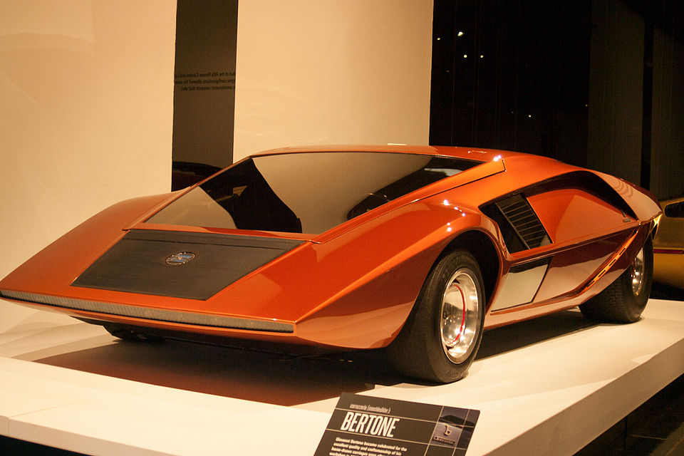

Design language
Sharp angles, an ultra-low roofline, and a pure wedge silhouette give this concept an instantly recognizable identity. It feels bold, experimental, and intentionally extreme.

Design Icon
The Lancia Stratos Zero is one of the most radical wedge-shaped concepts ever created, with a low, dramatic profile that still feels futuristic decades later.
Sharp angles, an ultra-low roofline, and a pure wedge silhouette give this concept an instantly recognizable identity. It feels bold, experimental, and intentionally extreme.
The Stratos Zero pushes concept-car styling into something almost sculptural. Its shape is so strong that it still looks unique even beside much newer vehicles.
This car adds visual contrast to the homepage because its angular, wedge-based form breaks away from the smoother surfaces of the other featured concepts.